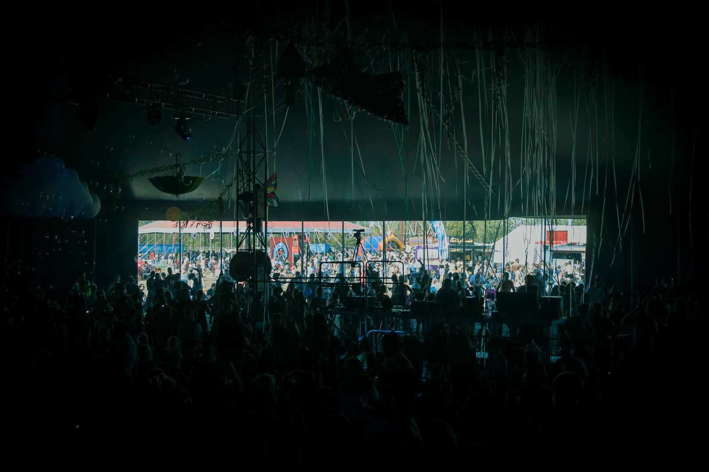

THE COVER STORY
Screen culture / Long reads
Why the small cinema still matters
A love letter to the shared silence, the big screen, and the stories we carry home.
Read the featureTHE ENTERTAINMENT EDIT
From the opening frame to the closing credits. Stories for people who love a good story.
Screen culture / Long reads
A love letter to the shared silence, the big screen, and the stories we carry home.
Read the featureSTAY CURIOUS
Read story
A big-screen ritual with a very human scale.
 Read story
Read story
The best nights are the ones when you forget to check your phone.
 Read story
Read story
Make room on the sofa. Some worlds are better shared.
 Read story
Read story
Build around the pieces you reach for, again and again.

Read storyYour next favourite sound might be on stage early.
MAKE IT YOURS
Save stories as you read. Your list stays in this browser.
FOLLOW YOUR CURIOSITY